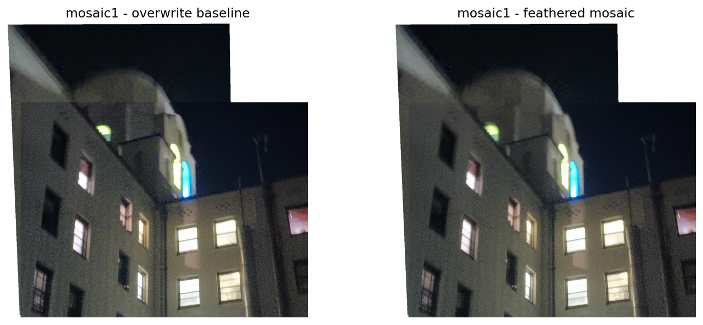
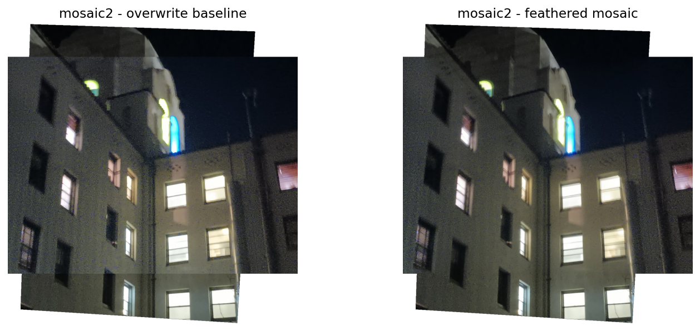
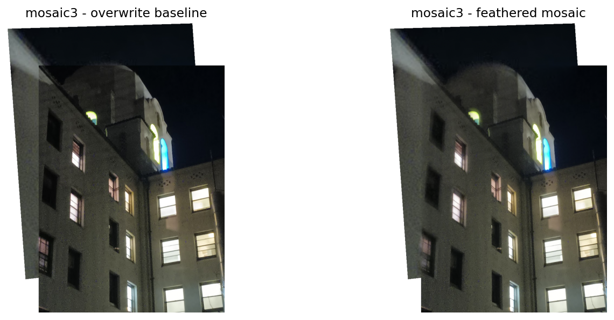
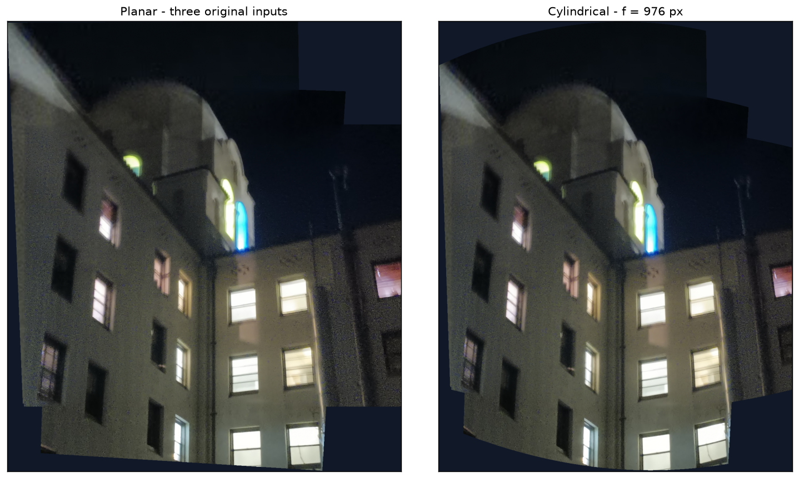
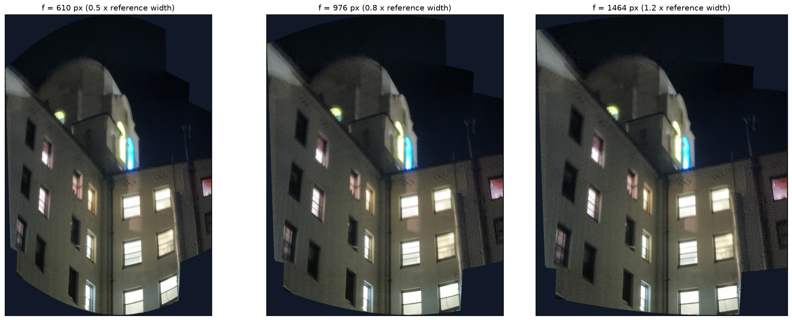

Shoot and Digitize Pictures
Source Photographs
How did you capture your image sets?
The report uses three supplied night photographs of the same building: 20261027_215256.jpg (686 × 915 pixels), 20261027_215300.jpg (1,220 × 915), and 20261027_215312.jpg (167 × 223). All three are below the 1,600-pixel working-size limit, so they are used at their supplied resolutions. The shared windows and colored light fixtures provide overlap. Three pairwise image sets are evaluated; they reuse these three photographs of one scene. The files contain no camera model or capture-method metadata. The location and whether the camera center was held fixed were not supplied, so these details are not asserted. The earlier ceiling screenshot is retained in the data folder but is not used in these mosaics.

proj4/images/mosaic1_left.jpg
proj4/images/mosaic1_right.jpgImage set 1: scene and capture notes
Source: 20261027_215312.jpg (167 × 223 pixels). Reference: 20261027_215300.jpg (1220 × 915). The output canvas is 1275 × 1250, using 16 matches; fitted-point RMSE is 8.7564 reference pixels. The small portrait contributes soft sky and roof detail above the larger landscape view. Feathering reduces the hard transition of the overwrite baseline, but the colored lights and some window edges still show ghosting. Empty corner wedges are transparent canvas, not missing source samples. A higher-resolution source, more accurate points, and a fixed camera center would be the next improvements. This is one of the three pairwise sets from the same building scene.

proj4/images/mosaic2_left.jpg
proj4/images/mosaic2_right.jpgImage set 2: scene and capture notes
Source: 20261027_215256.jpg (686 × 915 pixels). Reference: 20261027_215300.jpg (1220 × 915). The output canvas is 1220 × 1263, using 16 matches; fitted-point RMSE is 7.4711 reference pixels. This pair uses the two larger photos and retains more texture than the thumbnail pairs. The extra portrait coverage extends the building vertically. Window dividers and colored lights show residual doubling; possible parallax and imperfect manual localization cannot be separated from these files alone. Empty corner wedges are transparent canvas, not missing source samples. A higher-resolution source, more accurate points, and a fixed camera center would be the next improvements. This is one of the three pairwise sets from the same building scene.

proj4/images/mosaic3_left.jpg
proj4/images/mosaic3_right.jpgImage set 3: scene and capture notes
Source: 20261027_215312.jpg (167 × 223 pixels). Reference: 20261027_215256.jpg (686 × 915). The output canvas is 801 × 1072, using 16 matches; fitted-point RMSE is 7.5803 reference pixels. The thumbnail is enlarged into the larger portrait view, so its contribution is soft and adds limited new detail. Broad building structure aligns, but there are remaining local window and light mismatches. Empty corner wedges are transparent canvas, not missing source samples. A higher-resolution source, more accurate points, and a fixed camera center would be the next improvements. This is one of the three pairwise sets from the same building scene.
Recover Homographies
Point Matches & Geometry
How did you choose correspondences?
Sixteen corresponding architectural landmarks were manually identified by the assistant in each supplied photograph. They include visible window corners and colored-light tips, with the same landmark numbering in each view. No automatic feature detector or RANSAC was used. Coordinates are (x, y) pixel centers in the supplied working images. More than four matches make the eight-unknown solve overdetermined and reduce sensitivity to any one point, although noisy clicks and parallax still affect the fit. The thumbnail has particularly uncertain feature locations. The reported reprojection errors use the fitted matches; they are not independent accuracy tests.
Set up your system of equations
For a source (x, y) and reference (u, v), set h33 = 1:
x*h11 + y*h12 + h13 - u*x*h31 - u*y*h32 = u
x*h21 + y*h22 + h23 - v*x*h31 - v*y*h32 = v
h = [h11, h12, h13, h21, h22, h23, h31, h32]^T
A_i = [x y 1 0 0 0 -u*x -u*y]
[0 0 0 x y 1 -v*x -v*y]
b_i = [u, v]^T
Stack N pairs into A of shape (2N, 8) and b of length 2N.
Each point set is centered and scaled to mean distance sqrt(2).
Solve the normalized system with numpy.linalg.lstsq.
Denormalize: H = inverse(T_reference) @ H_normalized @ T_source.
Rescale H so H[2,2] = 1 when this entry is nonzero.
The full numerical A and b are printed by each notebook result cell.

proj4/results/mosaic1_points.pngMosaic 1: recovered homography
20261027_215312.jpg → 20261027_215300.jpg H = [[ 5.86437443 0.22678909 -54.76440145] [ -0.09602763 5.71263467 -330.73965996] [ 0.0002197 0.00016426 1. ]] Matches: 16 A shape: 32 × 8 Reprojection RMSE: 8.7564 reference pixels Largest fitted-point residual: 16.3789 pixels

proj4/results/mosaic2_points.pngMosaic 2: recovered homography
20261027_215256.jpg → 20261027_215300.jpg H = [[ 1.34572024 -0.04330097 94.50618106] [ 0.04825637 1.35802747 -138.45354961] [ -0.0000339 0.00003851 1. ]] Matches: 16 A shape: 32 × 8 Reprojection RMSE: 7.4711 reference pixels Largest fitted-point residual: 12.2032 pixels

proj4/results/mosaic3_points.pngMosaic 3: recovered homography
20261027_215312.jpg → 20261027_215256.jpg H = [[ 4.32185257 0.29641521 -114.75620915] [ -0.17886033 4.18086415 -136.55707863] [ 0.00038464 0.00000173 1. ]] Matches: 16 A shape: 32 × 8 Reprojection RMSE: 7.5803 reference pixels Largest fitted-point residual: 16.1766 pixels
Warp and Rectify Images
Inverse Warping
How does your inverse warp work?
The four source pixel-center corners are projected through H to obtain floor/ceiling output bounds. For each output pixel, its canvas offset is added to obtain reference coordinates, then H inverse maps it into the source. Dividing by the homogeneous coordinate gives the sampling position. Sampling is performed in strips of 128 output rows. A separate validity mask records finite coordinates inside the source. Real black pixels remain valid; empty canvas regions have alpha zero. The rectifications use an explicit 300 × 400 destination canvas to isolate the selected window rather than projecting the entire photograph.
How did you implement both interpolation methods?
Nearest neighbor rounds each valid source coordinate to the closest pixel. Bilinear interpolation uses x0=floor(x), y0=floor(y), dx=x-x0 and dy=y-y0, combining the four samples with weights (1-dx)(1-dy), dx(1-dy), (1-dx)dy, and dx*dy. Neighbor indices are clamped at the final row or column, while the validity mask excludes genuinely out-of-bounds samples. Both methods are implemented with NumPy indexing and arithmetic. Nearest neighbor preserves sample values and exposes stair steps; bilinear interpolation smooths those steps and also softens edges.

proj4/images/rectification1.jpg
proj4/results/rectification1_points.png
proj4/results/rectification1_nearest.png
proj4/results/rectification1_bilinear.pngRectification 1: geometry and result
The upper-left lit window on the front facade in 20261027_215300.jpg is treated as a planar rectangle. The four selected source corners, in clockwise order, are [[669, 544], [747, 531], [751, 628], [674, 640]]. They map to [[0, 0], [299, 0], [299, 399], [0, 399]], producing 300 × 400 pixels. The 3:4 output ratio is a chosen display ratio, not a measured physical window proportion. The result enforces rectangularity; it does not claim metrically correct dimensions. The original saturated panes contain little texture. In the outputs, nearest neighbor shows visible stair steps along the window divider, while bilinear interpolation gives a smoother and slightly softer divider. Some residual tilt in the internal dividers remains, consistent with approximate corner placement and uncorrected source distortion. Median warp-only times were 0.01137 s (nearest) and 0.02962 s (bilinear), after one warm-up and five timed runs.

proj4/images/rectification2.jpg
proj4/results/rectification2_points.png
proj4/results/rectification2_nearest.png
proj4/results/rectification2_bilinear.pngRectification 2: geometry and result
The upper-right lit window on the front facade in 20261027_215256.jpg is treated as a planar rectangle. The four selected source corners, in clockwise order, are [[564, 468], [624, 454], [631, 528], [571, 538]]. They map to [[0, 0], [299, 0], [299, 399], [0, 399]], producing 300 × 400 pixels. The 3:4 output ratio is a chosen display ratio, not a measured physical window proportion. The result enforces rectangularity; it does not claim metrically correct dimensions. The original saturated panes contain little texture. In the outputs, nearest neighbor shows visible stair steps along the window divider, while bilinear interpolation gives a smoother and slightly softer divider. Some residual tilt in the internal dividers remains, consistent with approximate corner placement and uncorrected source distortion. Median warp-only times were 0.01187 s (nearest) and 0.02207 s (bilinear), after one warm-up and five timed runs.
| Example | Output size (px) | Nearest neighbor (s) | Bilinear (s) |
|---|---|---|---|
| Rectification 1 | 300 × 400 | 0.01137 | 0.02962 |
| Rectification 2 | 300 × 400 | 0.01187 | 0.02207 |
What are the speed and quality trade-offs?
Both rectifications have the same 300 × 400 output size. Each time is the median of five warp-only calls after one warm-up; loading, plotting, and saving are excluded. rectification1: nearest 0.01137 s; bilinear 0.02962 s. rectification2: nearest 0.01187 s; bilinear 0.02207 s. Nearest neighbor requires fewer samples and is appropriate for discrete labels or when sample preservation matters. Bilinear uses four samples and arithmetic weights; it is preferable for smoother photographic magnification. Absolute timings are machine-dependent and these small vectorized jobs include memory-allocation overhead. The nearest-neighbor window bars are visibly stepped; bilinear smooths their boundaries. Neither method can restore detail absent from the source.
Blend Images into a Mosaic
Image Mosaics
How did you build and blend the mosaics?
For each pair the left source is mapped into the right reference, whose homography is the identity. The union of both transformed corner bounds defines one shared canvas. Each source pixel receives a positive distance-to-boundary weight min(x+1, width-x, y+1, height-y). Images and weight maps are inverse warped with bilinear interpolation. At each valid canvas pixel the result is sum(weight × RGB) / sum(weight); single-image regions retain their available image. An overwrite baseline is also saved for comparison. Feathering softens intensity transitions but cannot correct misregistration, restore missing thumbnail detail, or eliminate parallax.
proj4/images/mosaic1_left.jpg
proj4/images/mosaic1_right.jpg
proj4/results/mosaic1_mosaic.png
Mosaic 1: evaluate your result
Source: 20261027_215312.jpg (167 × 223 pixels). Reference: 20261027_215300.jpg (1220 × 915). The output canvas is 1275 × 1250, using 16 matches; fitted-point RMSE is 8.7564 reference pixels. The small portrait contributes soft sky and roof detail above the larger landscape view. Feathering reduces the hard transition of the overwrite baseline, but the colored lights and some window edges still show ghosting. Empty corner wedges are transparent canvas, not missing source samples. A higher-resolution source, more accurate points, and a fixed camera center would be the next improvements.
proj4/images/mosaic2_left.jpg
proj4/images/mosaic2_right.jpg
proj4/results/mosaic2_mosaic.png
Mosaic 2: evaluate your result
Source: 20261027_215256.jpg (686 × 915 pixels). Reference: 20261027_215300.jpg (1220 × 915). The output canvas is 1220 × 1263, using 16 matches; fitted-point RMSE is 7.4711 reference pixels. This pair uses the two larger photos and retains more texture than the thumbnail pairs. The extra portrait coverage extends the building vertically. Window dividers and colored lights show residual doubling; possible parallax and imperfect manual localization cannot be separated from these files alone. Empty corner wedges are transparent canvas, not missing source samples. A higher-resolution source, more accurate points, and a fixed camera center would be the next improvements.
proj4/images/mosaic3_left.jpg
proj4/images/mosaic3_right.jpg
proj4/results/mosaic3_mosaic.png
Mosaic 3: evaluate your result
Source: 20261027_215312.jpg (167 × 223 pixels). Reference: 20261027_215256.jpg (686 × 915). The output canvas is 801 × 1072, using 16 matches; fitted-point RMSE is 7.5803 reference pixels. The thumbnail is enlarged into the larger portrait view, so its contribution is soft and adds limited new detail. Broad building structure aligns, but there are remaining local window and light mismatches. Empty corner wedges are transparent canvas, not missing source samples. A higher-resolution source, more accurate points, and a fixed camera center would be the next improvements.
Bells and Whistles
Cylindrical Projection
Cylindrical projection and focal-length comparison
I implemented a cylindrical compositing surface using all three supplied building photographs. The landscape image is the common reference. The other two views use the existing source-to-reference homographies from mosaics 2 and 1. The planar baseline uses these same three inputs and registrations, so the comparison isolates the change in output surface rather than adding a different photograph.
Reference plane to unwrapped cylinder: dx = x - cx u = f * atan(dx / f) v = f * (y - cy) / sqrt(dx*dx + f*f) Inverse lookup for each output (u, v): theta = u / f x = cx + f * tan(theta) y = cy + v / cos(theta) source_pixel = normalize(inverse(H_source_to_reference) @ [x, y, 1]) Read the source color once with custom bilinear interpolation. The current shared-reference construction covers the visible finite plane branch; it is not a calibrated 360-degree capture.
For each cylindrical output pixel, I invert the cylinder projection, then apply the corresponding inverse homography to locate a point in each original source. A custom four-neighbor bilinear sampler reads RGB directly from that source. This composes both geometric transforms before interpolation, avoiding an intermediate warped RGB mosaic and its extra interpolation. A separate validity mask excludes unsupported samples while preserving real black pixels. Continuous distance-to-source-boundary weights feather valid contributions. Canvas bounds sample every source edge pixel, since a nonlinear projection can have boundary extrema between the four corners.
The virtual principal point is (609.5, 457) in the 1,220 × 915 reference image. I compared focal lengths 610, 976, 1464 pixels and chose f = 976 pixels (0.8 times reference width). The 610-pixel version bends the outer architecture more strongly; the 1,464-pixel version stays closer to the planar view. The chosen middle setting gives a visible cylindrical projection without the strongest boundary bending. This focal length is a visual parameter, not a recovered or calibrated camera focal length.
The selected cylindrical canvas is 1132 × 1441 pixels; the same-input planar canvas is 1275 × 1459. Cylindrical coordinates compress horizontal positions farther from the reference center and curve some straight architectural boundaries. The supplied low-resolution thumbnail still looks soft, and ghosting near windows and colored lights remains because the registrations are unchanged. This extension changes the compositing surface; it does not repair parallax or missing detail. Transparent wedges mark output regions without source coverage. The selected direct warp-and-blend call took 1.870 s (one run, excluding image loading, saving, and figure generation).
Projection background: Richard Szeliski, Image Stitching (IPAM 2013).


